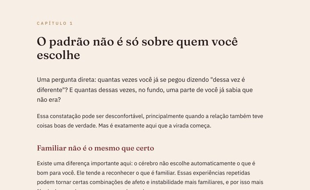
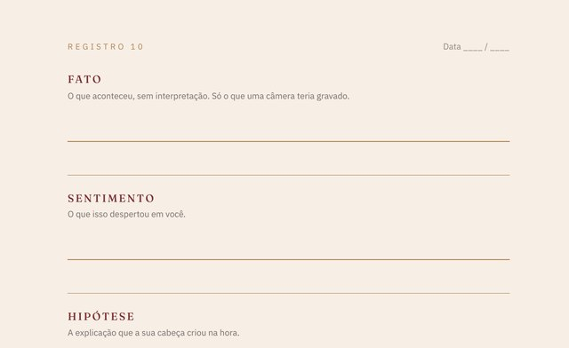
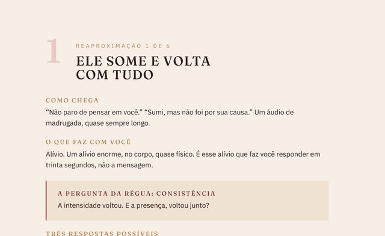

Ele começa num instante de poucos segundos, que tem hora marcada e passa quase sempre despercebido. Depois que você aprende a reconhecer esse instante, fica difícil deixar ele passar de novo.
São 2h47 da madrugada de uma sexta. O celular vibra.
Um áudio de vinte segundos: “não paro de pensar em você, é engraçado, nunca senti isso por ninguém antes.” Seu peito aperta na mesma hora.
E uma parte sua, bem no fundo, já sabe: isso já aconteceu antes. Com outro nome, outro rosto salvo em outro número.
O problema nunca foi falta de sinal. Você reconheceu o sinal. Só decidiu, sem perceber, que ele não contava.
Se amor, em algum momento da sua vida, veio junto com espera, ausência ou instabilidade, seu corpo aprendeu que é assim que amor se parece. E passou a confundir alerta com desejo, cada vez com mais facilidade.
Você pode saber tudo isso na cabeça. Ter lido sobre apego ansioso, ter feito terapia, ter dito pra outras mulheres exatamente o que elas deveriam fazer. E ainda assim, quando o áudio chega às 2h47, o coração dispara do mesmo jeito.
Porque o padrão não mora só na cabeça. Mora no corpo. E o corpo repete o que já foi repetido antes.
É o momento em que a realidade e a história que você conta sobre ela começam a se separar. Acontece muito antes do fim da relação, e é o único ponto em que ainda dá pra escolher diferente.
Toda relação tem rachadura. O que separa uma que machuca de uma saudável é o que acontece depois que ela aparece.
O selo continua inteiro por fora. A fenda já atravessou ele todo.
Cada etapa depende da anterior. Você não consegue Resistir a um padrão que ainda não Admitiu. E não consegue Admitir um padrão que ainda não aprendeu a Perceber.
Escolher é o que sobra quando os três primeiros já aconteceram. E é a única parte que ninguém pode fazer por você.
O primeiro passo tem uma ferramenta de quatro linhas que separa o que aconteceu do que a sua cabeça criou na hora. Ela está no e-book, com um exercício pra fazer antes de virar a página.
Cada um deles tem uma frase que você já disse em voz alta, defendendo a relação pra alguém. O capítulo 2 mostra as quatro, e o que observar em cada uma.
Um pedaço de cada um dos três arquivos.



O padrão que ele te ajuda a enxergar já custou meses.
Garantir meu acesso agoraO Método PARE é uma ferramenta educativa de reflexão e escolha. Cada etapa organiza uma contribuição da pesquisa em psicologia, com a referência ao autor original no fim do e-book.
Esses autores ajudam a entender mecanismos. O Método PARE não diagnostica você, ele ou a relação.
Você precisa parar de se abandonar.
Quero o método por R$ 39,90